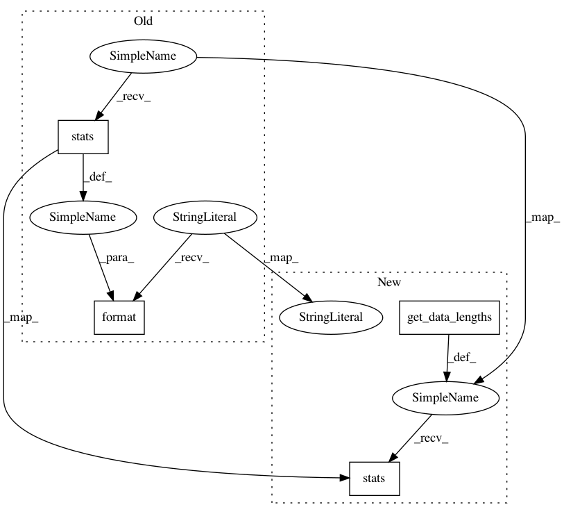

cd78bf1fe1f567bfc74c70ed4251ae1a58f79581,scripts/machine_translation/dataprocessor.py,,make_dataloader,#,198
Before Change
batch_sampler=val_batch_sampler,
batchify_fn=test_batchify_fn,
num_workers=num_workers)
test_batch_sampler = nlp.data.FixedBucketSampler(lengths=target_test_lengths,
batch_size=args.test_batch_size,
num_buckets=args.num_buckets,
ratio=args.bucket_ratio,
shuffle=False,
use_average_length=use_average_length,
bucket_scheme=bucket_scheme)
logging.info("Test Batch Sampler:\n{}".format(test_batch_sampler.stats()))
test_data_loader = gluon.data.DataLoader(data_test,
batch_sampler=test_batch_sampler,
batchify_fn=test_batchify_fn,
After Change
Create data loaders for training/validation/test.
data_train_lengths = get_data_lengths(data_train)
data_val_lengths = get_data_lengths(data_val)
data_test_lengths = get_data_lengths(data_test)
train_batchify_fn = btf.Tuple(btf.Pad(), btf.Pad(),
btf.Stack(dtype="float32"), btf.Stack(dtype="float32"))
test_batchify_fn = btf.Tuple(btf.Pad(), btf.Pad(),
btf.Stack(dtype="float32"), btf.Stack(dtype="float32"),
btf.Stack())
target_val_lengths = list(map(lambda x: x[-1], data_val_lengths))
target_test_lengths = list(map(lambda x: x[-1], data_test_lengths))
if args.bucket_scheme == "constant":
bucket_scheme = nlp.data.ConstWidthBucket()
elif args.bucket_scheme == "linear":
bucket_scheme = nlp.data.LinearWidthBucket()
elif args.bucket_scheme == "exp":
bucket_scheme = nlp.data.ExpWidthBucket(bucket_len_step=1.2)
else:
raise NotImplementedError
train_batch_sampler = nlp.data.FixedBucketSampler(lengths=data_train_lengths,
batch_size=args.batch_size,
num_buckets=args.num_buckets,
ratio=args.bucket_ratio,
shuffle=True,
use_average_length=use_average_length,
num_shards=num_shards,
bucket_scheme=bucket_scheme)
logging.info("Train Batch Sampler:\n%s", train_batch_sampler.stats())
train_data_loader = nlp.data.ShardedDataLoader(data_train,
batch_sampler=train_batch_sampler,
batchify_fn=train_batchify_fn,
num_workers=num_workers)
val_batch_sampler = nlp.data.FixedBucketSampler(lengths=target_val_lengths,
batch_size=args.test_batch_size,
num_buckets=args.num_buckets,
ratio=args.bucket_ratio,
shuffle=False,
use_average_length=use_average_length,
bucket_scheme=bucket_scheme)
logging.info("Valid Batch Sampler:\n%s", val_batch_sampler.stats())
val_data_loader = gluon.data.DataLoader(data_val,
batch_sampler=val_batch_sampler,
batchify_fn=test_batchify_fn,
num_workers=num_workers)
test_batch_sampler = nlp.data.FixedBucketSampler(lengths=target_test_lengths,
batch_size=args.test_batch_size,
num_buckets=args.num_buckets,
ratio=args.bucket_ratio,
shuffle=False,
use_average_length=use_average_length,
bucket_scheme=bucket_scheme)
logging.info("Test Batch Sampler:\n%s", test_batch_sampler.stats())
test_data_loader = gluon.data.DataLoader(data_test,
batch_sampler=test_batch_sampler,
batchify_fn=test_batchify_fn,
In pattern: SUPERPATTERN
Frequency: 3
Non-data size: 4
Instances
Project Name: dmlc/gluon-nlp
Commit Name: cd78bf1fe1f567bfc74c70ed4251ae1a58f79581
Time: 2018-11-19
Author: zs910504@gmail.com
File Name: scripts/machine_translation/dataprocessor.py
Class Name:
Method Name: make_dataloader